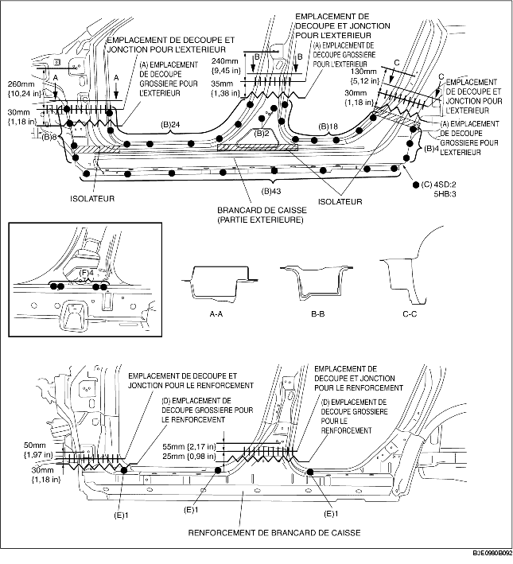

1. Découper grossièrement la zone (A), percer aux 99 emplacements indiqués par (B), aux 2 (4SD) ou 3 (5HB) emplacements indiqués par (C), puis déposer le longeron (extérieur).
2. Découper grossièrement la zone (D) et percer aux 3 emplacements indiqués par (E).
3. Percer aux 4 emplacements indiqués par (F), depuis l'intérieur et déposer le renforcement de longeron.
